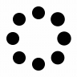

<div class="container">
  <table mat-table
         [dataSource]="variantLines"
  >
    <thead>
      <tr>
        <th></th>
        <th></th>
        <th></th>
        <th></th>
      </tr>
    </thead>
  </table>
</div>
<!--<div class="container text-center">
  <div class="row">
    <div class="col">
      &lt;!&ndash; FILTRO DE GENOTIPOS &ndash;&gt;
      <div class="row">
        <div class="toggleButtons">
          <button (click)="toggleProperty('properties')">Properties filter</button>
          <button (click)="toggleProperty('genotypes')">Genotypes filter</button>
        </div>
        <app-properties-filter
          *ngIf="filterToShow === 'properties'"
          (resetPageEvent)="resetShownVariants()"
          (notifyFilterEvent)="setPropertiesFilter($event)"></app-properties-filter>
        <app-genotype-filter
          *ngIf="filterToShow === 'genotypes'"
          (resetPageEvent)="resetShownVariants()"
          (notifyFilterEvent)="setGenotypeTypesFilter($event)"></app-genotype-filter>
      </div>

      &lt;!&ndash; REF Y ALT COMPLETO DE VARIANTE &ndash;&gt;
      <div id="refAltContainer">
        <span>{{ variantToShow }}</span>
      </div>
    </div>
  </div>

  <div class="row">
    &lt;!&ndash; CABECERA TABLA DE VARIANTE &ndash;&gt;
    <div class="col-12 header">
      <div class="title">
        <h4>Variant</h4>
      </div>
      <div>
        <button  class="button" type="button" onclick="console.log('prueba')">
          
        </button>
      </div>
    </div>

    &lt;!&ndash; CONTENEDOR CARGANDO &ndash;&gt;
    <div *ngIf="loading" class="col-12">
      
    </div>

    &lt;!&ndash; TABLA DE VARIANTES &ndash;&gt;
    &lt;!&ndash;<div class="col">
      <table *ngIf="!loading" class="table">
        <tr class="tableHeader">
            <th>SNP Id</th>
            <th>Coordinate</th>
            <th>Variant</th>
            <th>Change</th>
            <th>Gene</th>
            <th>Consequence</th>
            <th>DP</th>
            <th>Frequency</th>
            <th>GMAF</th>
        </tr>
        <tr
            *ngFor="let variant of variants.slice(initial,final);let indice=index"
            (click)="selectVariant(variant)"
            [ngClass]="{ 'selected': selectedVariant === variant }"
        >
            <td>
                <a id="identifierLink" href="https://www.ncbi.nlm.nih.gov/snp/{{ variant.identifier }}" target="_blank">
                    <span *ngIf="variant.identifier !== null">{{ variant.identifier }}</span>
                </a>
                <span *ngIf="variant.identifier === null">-</span>
            </td>
            <td>{{ ucsc[indice] }}:{{ variant.position }}</td>
            <td>
                <span *ngIf="variant.reference.length < 7 && variant.alternative.length < 7">
                    {{ variant.reference }} / {{ variant.alternative }}
                </span>
                <span *ngIf="variant.reference.length >= 7"
                    (mouseover)="mouseOver($event,variant.reference,variant.alternative)"
                    (mouseleave)="mouseLeave()">
                    {{ variant.reference.substring(0,6) }}... / {{ variant.alternative }}
                </span>
                <span
                    *ngIf="variant.alternative.length >= 7"
                    (mouseover)="mouseOver($event,variant.reference,variant.alternative)"
                    (mouseleave)="mouseLeave()">
                    {{ variant.reference }} / {{ variant.alternative.substring(0,6) }}...
                </span>
            </td>
            <td>
                <span *ngIf="variant.consequence[0].hgvsp !== null">{{ variant.consequence[0].hgvsp }}</span>
                <span *ngIf="variant.consequence[0].hgvsp === null">-</span>
            </td>
            <td>{{ geneSymbols[indice] }}</td>
            <td>{{ effect[indice] }}</td>
            <td>{{ dp[indice] }}</td>
            <td>{{ localFrequency[indice] }}</td>
            <td>{{ globalFrequency[indice] }}</td>
        </tr>
    </table>
    </div>&ndash;&gt;
    &lt;!&ndash; TABLA DE DETALLES &ndash;&gt;
    <div class="col-12">
      <table
        id="variants-table"
        data-data-field="variants"
        data-detail-view="true"
        data-detail-formatter="true"
        data-unique-id="id"
        data-height="620"
        data-search="true"
        data-show-columns="true"
        data-pagination="true"
        data-show-export="true"
        data-buttons-align="left"
      >
        <thead>
          <tr>
            <th data-field="snpId" data-title="SNP ID"></th>
            <th data-field="region" data-title="Region"></th>
            <th data-field="variant" data-title="Variant"></th>
            <th data-field="consequence" data-title="Consequence"></th>
            <th data-field="gene" data-title="Gene"></th>
            <th data-field="effect" data-title="Effect"></th>
            <th data-field="dp" data-title="DP"></th>
            <th data-field="frequency" data-title="Frequency"></th>
            <th data-field="gmaf" data-title="GMAF"></th>
          </tr>
        </thead>
      </table>
      <table id="table"></table>
    </div>

    &lt;!&ndash; FOOTER TABLA DE VARIANTE &ndash;&gt;
    <div class="col-12">
      <app-table-footer
        [filteredElements]="filteredElements"
        [first]="first"
        [initial]="initial"
        [last]="last"
        [final]="final"
        [totalPages]="totalPages"
        [numberOfElements]="numberOfElements"
        [pageNumber]="pageNumber"
        (prevPageEvent)="prevPage()"
        (nextPageEvent)="nextPage()"
        (firstPageEvent)="firstPage()"
        (lastPageEvent)="lastPage()"></app-table-footer>
    </div>
&lt;!&ndash;    <div class="col" *ngIf="selectedVariant != null">&ndash;&gt;
&lt;!&ndash;      <app-variant-details class="variantDetails" [variant]="selectedVariant"></app-variant-details>&ndash;&gt;
&lt;!&ndash;    </div>&ndash;&gt;
  </div>


</div>-->
